About Me
My name is Sean Davey
I have achieved a great amount in my career so far, working in various industries around the world. I am professional, reliable and highly motivated. I worked over ten years in the hospitality / catering industry before moving
into the IT industry, where my progress has been rapid. As you may see below I have a history of progression within each company I work with, and I am excited to see what the future holds for me in my next workplace.
I am friendly, a great team member and always willing to help. I organise my workload efficiently and always try to accept extra responsibility. I study IT related subjects in my personal time and dedicate a lot of my focus
to self-improvement.
I currently live in Brno, after returning from living and travelling around New Zealand / Asia for almost 2 years. I can understand Czech language to a reasonable level, and would like to be fluent one day
Go Back
I have achieved a great amount in my career so far, working in various industries around the world. I am professional, reliable and highly motivated. I worked over ten years in the hospitality / catering industry before moving into the IT industry, where my progress has been rapid. As you may see below I have a history of progression within each company I work with, and I am excited to see what the future holds for me in my next workplace.
I am friendly, a great team member and always willing to help. I organise my workload efficiently and always try to accept extra responsibility. I study IT related subjects in my personal time and dedicate a lot of my focus to self-improvement.
I currently live in Brno, after returning from living and travelling around New Zealand / Asia for almost 2 years. I can understand Czech language to a reasonable level, and would like to be fluent one day
 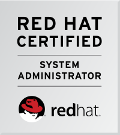
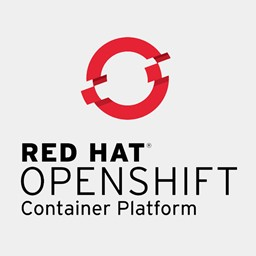
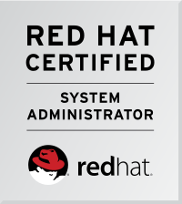
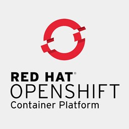

 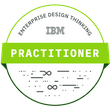
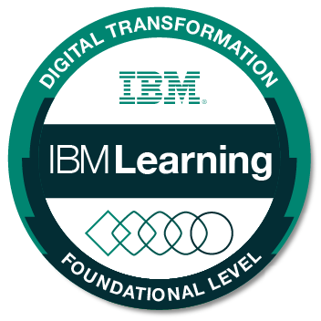
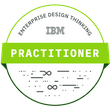
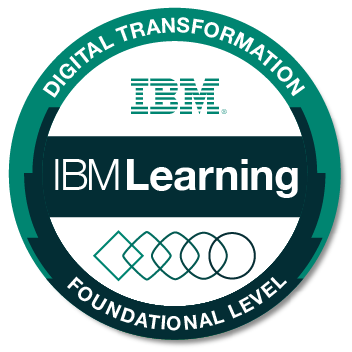
 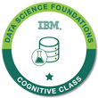
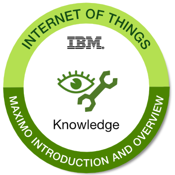
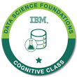
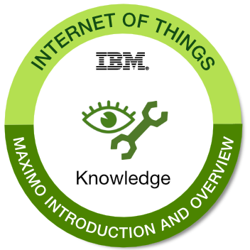
 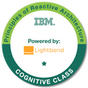
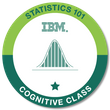
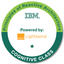
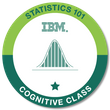